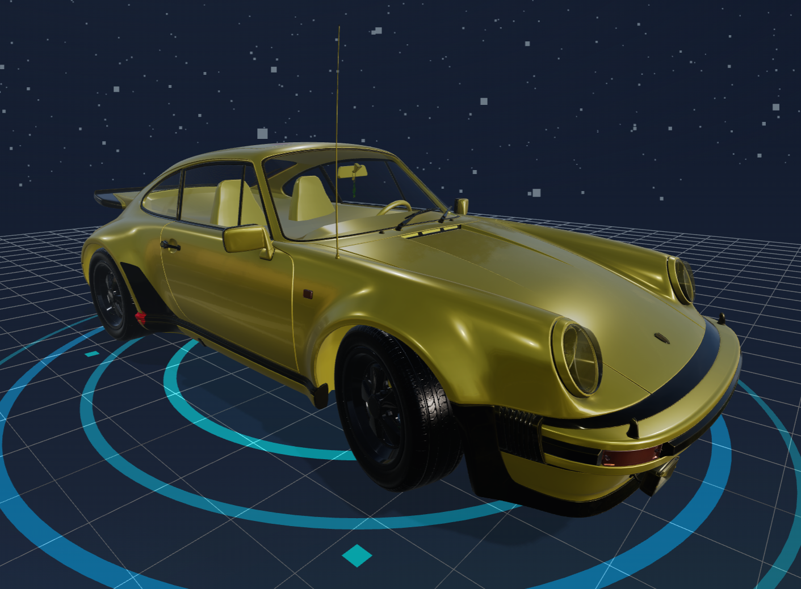
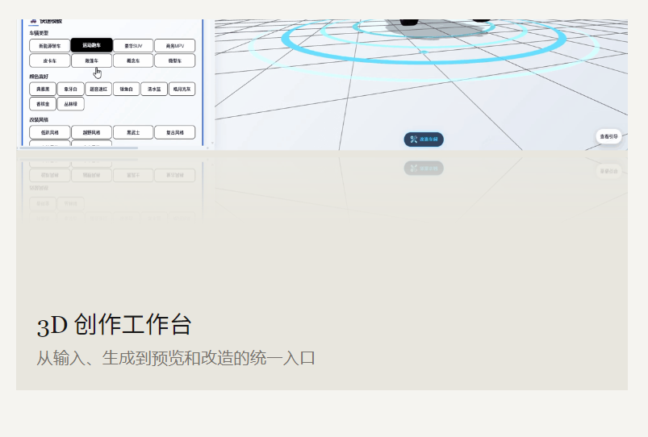
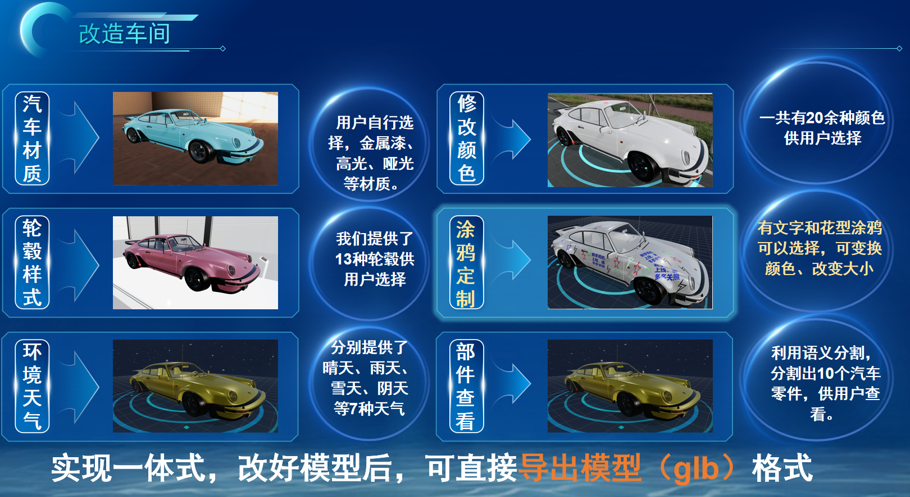
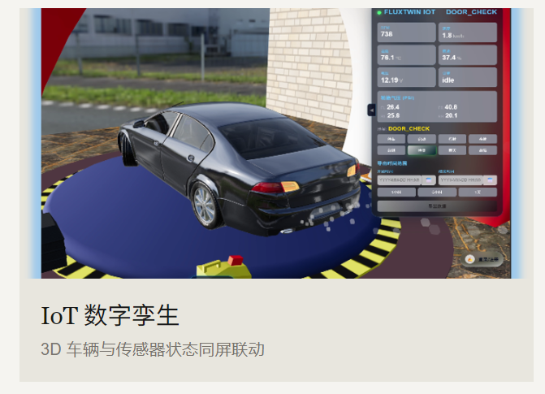
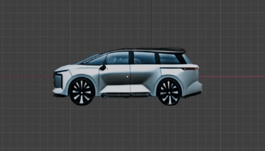
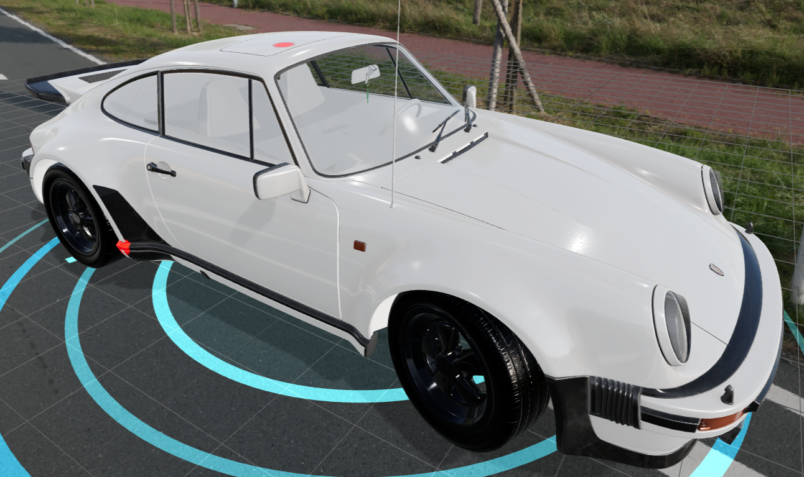
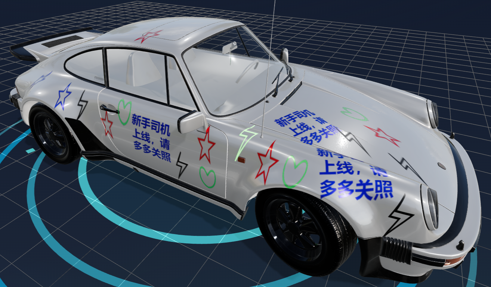
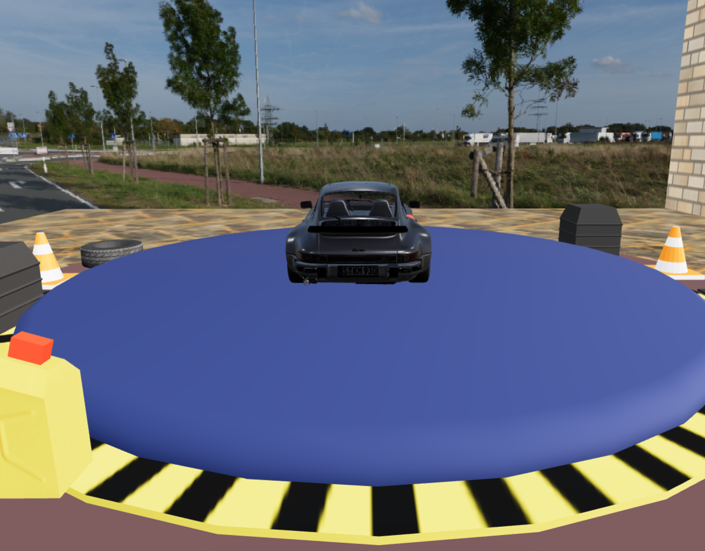
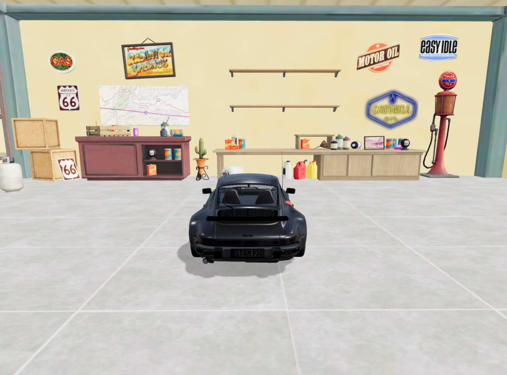

CASE 01 / 2026

NeuroDrive
AI × 3D Design Workflow
AI × 3D Design Workflow
主案例 · AI 设计工具
NeuroDrive
基于 HunYuan3D 的汽车外观工业设计智能体
面向汽车设计爱好者与半专业用户的一站式 AI 汽车设计平台：输入文字或参考图，生成并编辑 3D 方案，再分享复用；打通从灵感探索到交互验证的完整链路。
AI AgentHunYuan3D工业设计产品策划
展开案例 ↓AI PRODUCT PORTFOLIO · 2026
我关注 AI 如何真正进入工作流：理解用户问题，梳理产品机制，定义体验边界，再用清晰的 PRD 和原型推动落地。
AI 产品不是把模型
放进页面里，而是
重新设计工作方式。
SELECTED WORK
以真实项目为基础，展示我如何从场景、用户和技术约束出发，完成一套完整的 AI 产品思考。

主案例 · AI 设计工具
基于 HunYuan3D 的汽车外观工业设计智能体
面向汽车设计爱好者与半专业用户的一站式 AI 汽车设计平台：输入文字或参考图，生成并编辑 3D 方案，再分享复用；打通从灵感探索到交互验证的完整链路。
PRODUCT THINKING
AI 产品经理的价值，不只是写功能，而是把不确定性拆成团队可以共识、验证和交付的步骤。
从用户角色、任务链路与现有成本出发，判断 AI 是否真的适合介入。
把模型能力放进明确的输入、生成、评审、编辑和反馈闭环中。
同时看体验指标与业务指标，让产品从“能生成”走向“值得使用”。
CASE STUDY / NEURODRIVE
以项目复盘报告为主线，结合原 PPT、技术方案、产品流程与界面证据整合。下方分别标注产品目标和报告记录的验证结果，便于快速理解方案与项目产出。
NeuroDrive 不止是一个生成器，而是一套围绕设计、改造、感知、协作与沉淀建立的汽车智能创作系统。
输入车型描述、风格关键词和参考图，快速探索汽车外观方向，为后续建模提供设计依据。
证据：多模态输入与方案生成工作台将二维创意推进到可观察、可旋转、可调整的三维模型，支持方案评审与继续改造。
证据：3D 模型生成与实时预览通过物联网设备实时监测车辆与环境状态，把数字模型、实体车辆和传感器数据连接起来。
证据：FLUXTWIN IOT 实时监测面板围绕材质、轮毂、天气、涂鸦和零部件查看等维度进行个性化改造，并支持模型导出。
证据：20+ 颜色、13 种轮毂、7 种天气与语义分割沉淀用户作品、改造方案和模型资产，让个人创作可以被展示、复用和持续迭代。
产品规划：作品发布、模型分享与灵感互动将演示截图转化为 HR 可以快速扫描的产品证据：我不仅参与功能设计，也能把功能组织成完整的用户工作流。




概念草图、参考图和文字需求分散在不同工具，早期沟通成本高。
三维效果生成与修改依赖专业软件，非设计角色难以快速参与评审。
每一轮修改缺少可追溯的版本与参数，经验难以复用。
核心功能 多模态输入 · 风格与比例控制 · 多方案生成 · 版本对比 · 设计评审记录
AI 边界 AI 负责扩大探索空间，人负责审美判断、工程约束与最终决策。
用户输入车型定位、设计关键词与参考图后，系统生成可比较的候选方案，并展示本次生成的约束条件。
生成结果与输入约束一致；支持收藏、重新生成与进入详情。
用户可对多个方案进行并列对比，通过自然语言或参数调整继续迭代。
保留版本关系；每次迭代可回退；修改意图可被系统复述确认。
支持对关键部位添加批注，沉淀评审结论，为下一轮生成提供上下文。
批注与版本绑定；结论可导出；权限与项目成员可管理。
界面以“工作台”而非“聊天框”为核心：左侧管理项目上下文，中间浏览方案，右侧控制生成条件与迭代历史。




竞品可按“生成能力 × 专业控制 × 协作沉淀”拆解。通用图像生成工具擅长探索，但缺少汽车设计语境；传统 3D 软件专业度高，但学习成本和协作门槛高。
A LITTLE ABOUT ME
我正在寻找 AI 产品经理 / 产品助理机会。我的优势是能同时理解用户任务、产品结构和 AI 技术边界，把模糊的想法整理成可以讨论、验证和落地的方案。
我会用用户旅程、竞品拆解、PRD、原型和指标体系，把“模型能做什么”翻译成“用户为什么需要它”。
LET'S TALK
邮箱：shiyider@qq.com 电话：18712289371